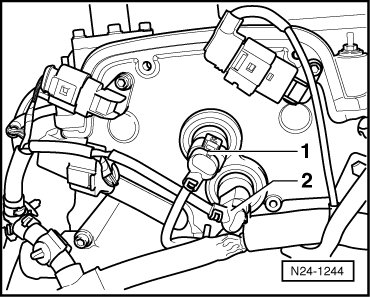
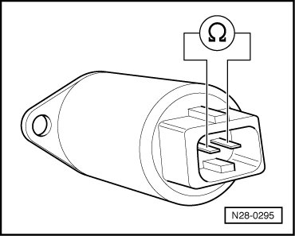
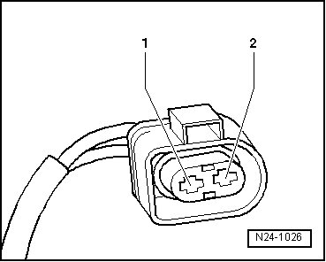
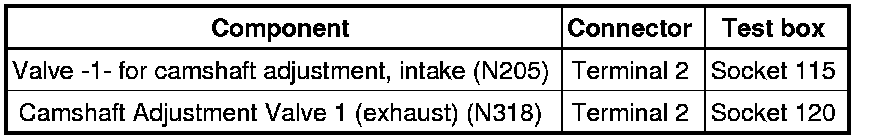

Variable Valve Timing Actuator: Testing and Inspection
Diagnostic Procedures
Camshaft Adjusting Valves, Checking
Function
The camshaft adjustment is load- and RPM dependant. The electrical valves for camshaft adjustment switch oil pressure onto camshaft adjusters (mechanical adjustment mechanisms), which then adjust the camshafts.
Special tools, testers and auxiliary items required
• Multimeter (VAG1526) or Multimeter (VAG1715)
• Connector test kit (VAG1594)
• Wiring diagram
Test requirements
• Respective fuses of camshaft adjustment valves in E-box (in plenum chamber, left side) must be OK:

• Motronic Engine Control Module (ECM) Power Supply Relay (J271) must be OK, check:
• Ignition switched off.
Test sequence
- Disconnect 2-pin harness connector to the respective valve for camshaft adjustment:

1. Valve -1- for camshaft adjustment, intake (N205)
2. Camshaft Adjustment Valve 1 (exhaust) (N318)
• Before disconnecting harness connectors, mark allocation to component.
Checking resistances
- Measure resistance between terminals of the respective valve for camshaft adjustment.

Specified value: 10.0 to 18.0 ohms
If specified value is not obtained:
- Replace control housing for camshaft adjustment.
- Erase DTC memory of Engine Control Module (ECM) , Diagnostic mode 4: Reset/erase diagnostic data.
- Generate readiness code.
If specified value is obtained:
- Check wires according to wiring diagram.
Checking wiring
- Connect test box to control module wiring harness , connect test box for wiring test.
- Check wires between test box and 2-pin connector to Engine Control Module (ECM) for open circuit according to wiring diagram.

Wire resistance: max. 1.5 ohms

- Check the wire for short circuit to B+ and Ground (GND).
Specified value: infinite ohms
- Check wire between 2-pin connector terminal 1 and Motronic Engine Control Module (ECM) Power Supply Relay (J271) for open circuit according to wiring diagram.
Wire resistance: max. 1.5 ohms
- Erase DTC memory of Engine Control Module (ECM) , Diagnostic mode 4: Reset/erase diagnostic data.
- Generate readiness code.
If no malfunctions are found in wires:
- Replace Motronic Engine Control Module (ECM) (J220).
Final Procedures
After the repair work, the following work steps must be performed in the following sequence:
1. Check the DTC memory. Refer to --> [ Diagnostic Mode 03 - Read DTC Memory ] Diagnostic Modes 01 - 09.
2. If necessary, erase the DTC memory. Refer to --> [ Diagnostic Mode 04 - Erase DTC Memory ] Diagnostic Modes 01 - 09.
3. If the DTC memory was erased, generate readiness code. Refer to --> [ Readiness Code ] Monitors, Trips, Drive Cycles and Readiness Codes.